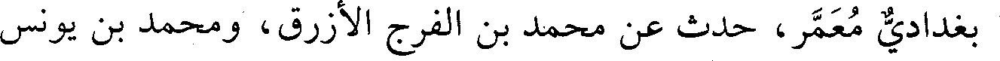
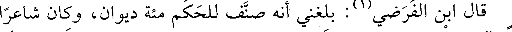
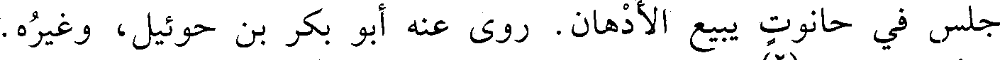
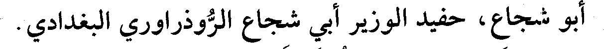
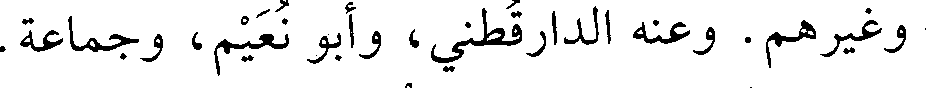
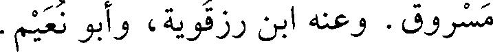
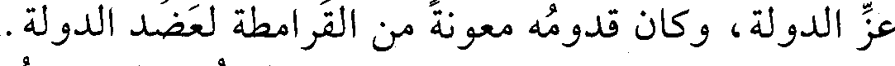

File: 000480.gt.txt (if the image is defective, simply delete all Arabic text and the line will be excluded)

بغدادي معمر، حدث عن محمد بن الفرج الأزرق، ومحمد بن يونس
File: 000481.gt.txt (if the image is defective, simply delete all Arabic text and the line will be excluded)
في مذهب مالك» ، وكتاب «الفتيا» وكتاب «تاريخ الأندلس» ، و«تاريخ
File: 000482.gt.txt (if the image is defective, simply delete all Arabic text and the line will be excluded)
الإفريقيين»، وكتاب «النسب» .
File: 000483.gt.txt (if the image is defective, simply delete all Arabic text and the line will be excluded)

قال ابن الفرضي (1) : بلغني أنه صنف للحكم مئة ديوان، وكان شاعرا
File: 000484.gt.txt (if the image is defective, simply delete all Arabic text and the line will be excluded)
بليغا لكنه يلحن، وكان يتعانى الكيمياء، واحتاج بعد موت الحكم إلى أن
File: 000485.gt.txt (if the image is defective, simply delete all Arabic text and the line will be excluded)

جلس في حانوت يبيع الأدهان. روى عنه أبو بكر بن حوئيل، وغيره.
File: 000486.gt.txt (if the image is defective, simply delete all Arabic text and the line will be excluded)
وتوفي في صفر (2) .
File: 000487.gt.txt (if the image is defective, simply delete all Arabic text and the line will be excluded)
18 - محمد بن الحسن بن سعيد، أبو العباس ابن الخشاب
File: 000488.gt.txt (if the image is defective, simply delete all Arabic text and the line will be excluded)
المخرمي الصوفي الزاهد.
File: 000489.gt.txt (if the image is defective, simply delete all Arabic text and the line will be excluded)
صاحب حكايات عن الشبلي وغيره . وعنه السلمي، والحاكم(3) .
File: 000490.gt.txt (if the image is defective, simply delete all Arabic text and the line will be excluded)
19 - محمد بن الحسين بن محمد بن الحسين، الوزير ظهير الدين
File: 000491.gt.txt (if the image is defective, simply delete all Arabic text and the line will be excluded)

أبو شجاع، حفيد الوزير أبي شجاع الروذراوري البغدادي.
File: 000492.gt.txt (if the image is defective, simply delete all Arabic text and the line will be excluded)
وزر للمسترشد ثم عزل ولزم بيته دهرا في نعمة وعافية.
File: 000493.gt.txt (if the image is defective, simply delete all Arabic text and the line will be excluded)
مات في ذي القعدة، وقد شاخ.
File: 000494.gt.txt (if the image is defective, simply delete all Arabic text and the line will be excluded)
20 - محمد بن حميد بن سهل المخرمي، أبو بكر.
File: 000495.gt.txt (if the image is defective, simply delete all Arabic text and the line will be excluded)
سمع أبا خليفة، وجعفرا الفريابي، والهيثم بن خلف الدوري،
File: 000496.gt.txt (if the image is defective, simply delete all Arabic text and the line will be excluded)

وغيرهم. وعنه الدارقطني، وأبو نعيم، وجماعة.
File: 000497.gt.txt (if the image is defective, simply delete all Arabic text and the line will be excluded)
قال البرقاني: ضعيف.
File: 000498.gt.txt (if the image is defective, simply delete all Arabic text and the line will be excluded)
وقال ابن أبي الفوارس: فيه تساهل شديد(4) .
File: 000499.gt.txt (if the image is defective, simply delete all Arabic text and the line will be excluded)
21 - محمد بن عمر بن محمد بن الفضل، أبو عبدالله الجعفي
File: 000500.gt.txt (if the image is defective, simply delete all Arabic text and the line will be excluded)
البغدادي.
File: 000501.gt.txt (if the image is defective, simply delete all Arabic text and the line will be excluded)
سمع أبا شعيب الحراني، وموسى بن هارون، وأبا العباس بن
File: 000502.gt.txt (if the image is defective, simply delete all Arabic text and the line will be excluded)

مسروق. وعنه ابن رزقويه، وأبو نعيم.
File: 000503.gt.txt (if the image is defective, simply delete all Arabic text and the line will be excluded)
197
File: 000504.gt.txt (if the image is defective, simply delete all Arabic text and the line will be excluded)
سنة ست وستين وثلاث مئة
File: 000505.gt.txt (if the image is defective, simply delete all Arabic text and the line will be excluded)
في جمادى الأولى زفت بنت عز الدولة إلى الطائع لله(1) .
File: 000506.gt.txt (if the image is defective, simply delete all Arabic text and the line will be excluded)
وفيها جاء أبو بكر محمد بن علي بن شاهويه صاحب القرامطة، ومعه
File: 000507.gt.txt (if the image is defective, simply delete all Arabic text and the line will be excluded)
ألف رجل منهم إلى الكوفة، وأقام الدعوة بها لعضد الدولة، وأسقط خطبة
File: 000508.gt.txt (if the image is defective, simply delete all Arabic text and the line will be excluded)

عز الدولة، وكان قدومه معونة من القرامطة لعضد الدولة.
File: 000509.gt.txt (if the image is defective, simply delete all Arabic text and the line will be excluded)
وفيها كانت وقعة بين عز الدولة وعضد الدولة، أسر فيها غلام تركي
To Save: `Ctrl+s`, make sure to choose `Webpage, complete`!